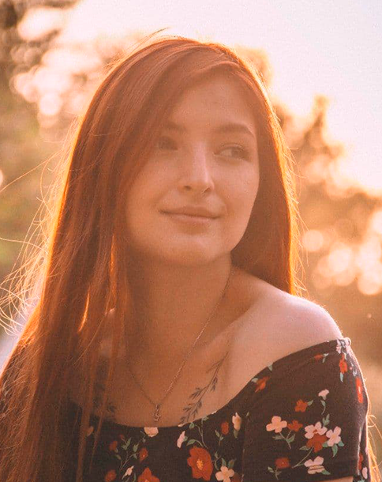

Моя личная страница
НЕМНОГО ОБО МНЕ

Привет всем! Меня зовут Соня.
Я самая обычная девушка, старающаяся оптимистично относиться к жизни. Мне хотелось бы стать сильной, успешной и уверенной в
себе. Пока ничего не могу сказать о создании семьи, поскольку я сейчас больше нацелена на учебу. Считаю, что нужно обеспечить
крепкую материальную базу, а потом уже задумываться о муже и детях.
Мне нравится учиться, я прекрасно понимаю, что в век высоких технологий важно быть информированным человеком. Мой любимый предмет
в школе – математика. Меня прельщает ее четкость, логичность, упорядоченность. Абсолютно согласен с утверждением: «Математика – царица
наук». Люблю информатику, неплохо разбираюсь в компьютерах. А еще мне нравится история, поскольку я уже давно для себя поняла, что знание
прошлого помогает разобраться в настоящем и даже спрогнозировать будущее.
Насчет своего характера мне трудно сказать что-то вразумительное. Я нахожусь в том возрасте, когда меняются основные принципы, убеждения,
взгляды на жизнь. Стараюсь быть доброй, помогать людям. Не терплю фальши. Могу мгновенно разорвать отношения с человеком, если уличу его
в лицемерии. Эдакий правдоруб. Не знаю, хорошо это или плохо. Наверное, следует все-таки быть мягче, давать второй шанс людям, ведь никто
не идеален. Работаю над этим.
В голове пока только мечты, понимаю, что все еще сто раз может измениться. Мне кажется, главное – жить с интересом, изучать новое, общаться с людьми,
проводить больше времени с семьей. А остальное приложится. Время покажет.
МОИ ЧЕРТЫ ХАРАКТЕРА
дружелюбность
креативность
целеустремлённость
доброта
МОЁ НАСТРОЕНИЕ
грусть
я в текущий момент
радость
ЛЮБИМАЯ ЦИТАТА

МОИ ЛЮБИМЫЕ ТВ-ШОУ
ХАТА НА ТАТА
ВЕЧЕРНИЙ УРГАНТ
COMEDY CLUB

ЛИГА СМЕХА
ГДЕ Я СЕЙЧАС ЖИВУ
Харьков является одним из крупнейших городов Украины, а также областным центром Харьковской области. Основан в 1654 году. Численность населения составляет около 1,5 млн. чел. (1446,5 тыс. человек на 01.01.2011). Харьков расположен в северо-восточной части Украины на границе двух ландшафтных зон - лесостепи и степи - возле места слияния рек Лопань, Уды и Харьков. Его территория представляет собой холмистую равнину - более половины общей площади города расположено на участках высотой около 100 м над уровнем моря. Харьковские реки и их притоки мелкие и не судоходны. Харьков раскинулся с севера на юг на 24 км, с востока на запад на 25 км, занимая площадь около 306 кв. км. В нем более 2,5 тысяч проспектов, улиц, переулков и площадей. Современный город разделен на 9 административных районов: Дзержинский, Октябрьский, Киевский, Коминтерновский, Ленинский, Московский, Орджоникидзевский, Фрунзенский, Червонозаводский. Разные части города, в основном на окраинах, сохранили за собой также и исторические неофициальные названия (например, Алексеевка, Павлово Поле, Померки, Сокольники, Салтовка, Журавлевка, Ивановка, Гончаровка, Лысая Гора, Холодная Гора и др.). Благодаря удобному географическому положению Харьков на протяжении веков наращивал экономическую мощь и развивал систему транспортных коммуникаций. Сегодня он является очень крупным транспортным узлом: важные железнодорожные пути и автомагистрали ведут на Донбасс, в Крым, на Кавказ, к портам Черного, Азовского и Балтийского морей, ко многим крупным индустриальным центрам, расположенным за пределами Украины. Через Харьков проходят автомагистрали М-03 (Киев - Харьков - Должанский), М-26 (Харьков - Симферополь - Севастополь), М-27 (Харьков - Щербаковка).